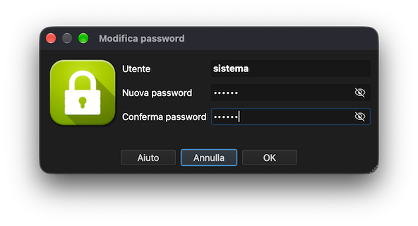

Cambia la password dell'utente corrente. Si apre dal menu, oppure da sola all'accesso quando la password va cambiata.

Parametri/opzioni:
Se il cambio non riesce, la finestra resta aperta per riprovare.
E' possibile visualizzare la password cliccando sull'icona dell'occhio/occhio sbarrato.